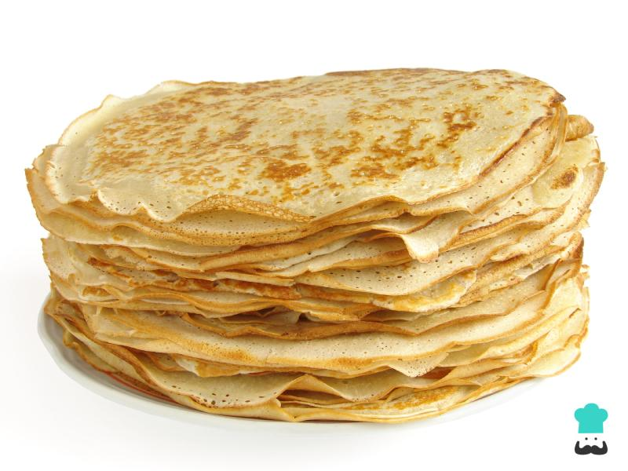

Preparacion:
- Colocar 1kg de harina leudante, un huevo, cuatro cuacharas de leche, un poco de esncia
de vainilla o rayadura de limon, y un chorro un poco grande de aceite en el bols
- colocar un poco de agua y vatir con la vatidora, y poco a poco agraga chorritos de agua,
hasta que no quede grumos y la mescla tiene que quedar mas o menos liquida
- colocar la sarte en el fuego de la hornalla y esparcir la manteca en ella.
- cuando la sarte se haya calentado un poco, con la ayuda del cucharon vertir un poco de la
mezcla en la sarten, esperar hasta que las burbugitas de la mezcla se hallan esplotado, osea
cuando se halla cosinado, luego dar vuelta al panqueque y esperar un ratito y luego sacarlo con
la ayuda de la espatula. Y hacer lo mismo con el resto de la meszla

Y listo ya estan los panqueques
|